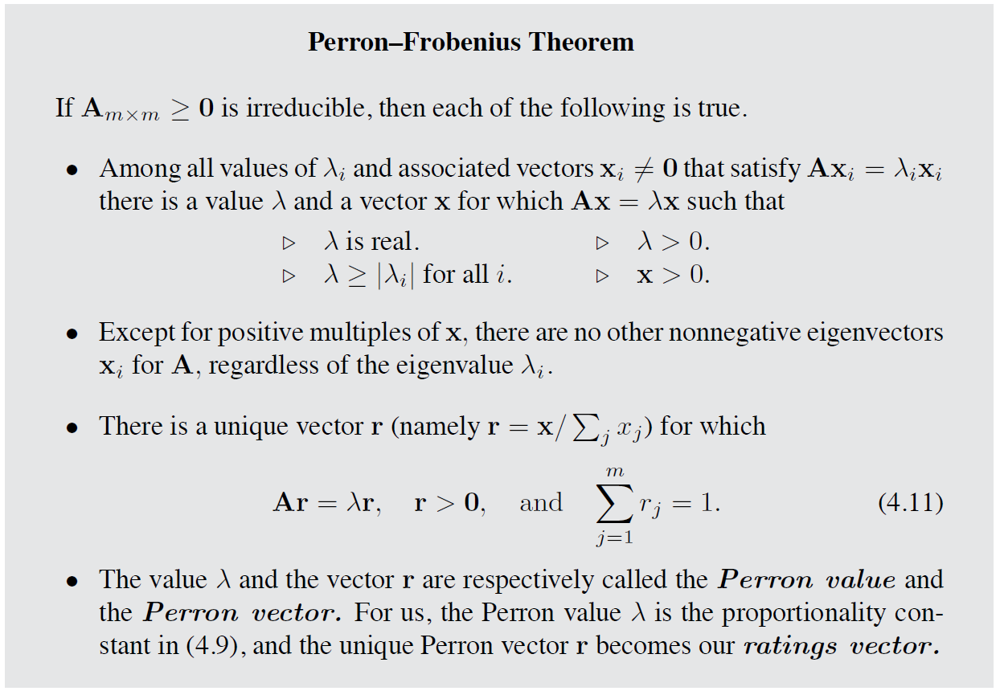

Keener’s method
Summary of Massey’s method
Massey’s vision
Ratings are a unit quantity distributed among tournament participants.
The data that drives ratings is point difference.
The difference in strenght is latent but revealed by the points difference in a direct match.
By definition, points difference sums to 0; the natural linear algebra formalisation has a singular matrix and is not actionable.
Massey alters the matrix to guarantee that a solution exists, if approximate.
Massey’s ratings are the solution \(\mathbf{r}\) of \(\overline{M}\mathbf{r} = \mathbf{p}\)


Keener’s method
Keener’s view, 1
One’s strength should be measured relatively to their opponents’
Team i might be strong against team j but weak against k and so on:
\(s_i = \sum_{j=1}^{m} s_{ij}\)
where \(s_{ii} = 0\) (\(i\) cannot play itself)
Keener’s view, 2
As with Massey, ratings are a unit quantity distributed among tournament participants:
\(\sum_{i=1}^{m} r_{i}=1\)
Pie chart effect: one’s rating improvement can only come as others’ worsens.
Later, ratings will determine rankings and winning probabilities.
Keener’s view, 3
K. believes that strengh, which is manifest, and rating, which is latent, should be connected by a scaling factor \(\lambda\), which is to be determined for each league/turnament:
\(s_i = \lambda r_i\)
So, in vector notation:
\(\mathbf{s} = \lambda \mathbf{r}\)
At the moment we know neither of the three… let’s start with strenght.
The input data
K. does not commit to a specific way to gauge strength:
\(a_{ij}\) = the statistics produced by team \(i\) when playing \(j\)
non-negativity requirement: \(a_{ij}\ge 0\)
Example Stats: wins
Consider wins/ties:
\[a_{ij} = W_{ij} + \frac{T_{ij}}{2}\]
Example Stats: points
Points scored against:
\(a_{ij} = S_{ij}\)
Points is considered a crude measure of strength.
Avoid high-scoring matches to have a disproportionate effect by means of relative scoring:
\[a_{ij} = \frac{S_{ij}}{S_{ij} + S_{ji}} \]
The Laplace correction
There is a cold start problems that is often found in Data Science: at the start, lack of data makes the rating not meaningful or even impossible.
Laplace set stats to 0.5, with minimal alteration of subsequent measures
\[a_{ij} = \frac{S_{ij} + 1}{S_{ij} + S_{ji} + 2} \]
if \(S_{ij} \approx S_{ji}\) and both are large then \(a_{ij} \approx \frac{1}{2}\) (Good or bad?)
Skewing
it mitigates convergence to \(\frac{1}{2}\) over time
it sterilises the effect of exteme scores

\[h(x) = \frac{1}{2} + \textrm{sgn}\{x-(1/2)\}\sqrt{|2x -1|}/2\]
additionally, \(a_{ij} \leftarrow \frac{a_{ij}}{n_i}\) to balance no. of games.
keener’s strength
Strenght revealed by performance (scoring) but tempered by the strength of the opponent themselves.
Relative s. of i when playing against j:
\[s_{ij} = a_{ij}\cdot r_j\]
(N.B. scoring is \(S_{ij}\) while strength is \(s_{ij}\))
Cumulative strenght
Cumulative/absolute strenght of team i:
\[s_i = \sum_{j=1}^{m} s_{ij}\]
\[ \mathbf{s} = \begin{pmatrix} \sum_{j=1}^{m} s_{1j}\\ \sum_{j=1}^{m} s_{2j}\\ \vdots\\ \sum_{j=1}^{m} s_{mj} \end{pmatrix} \]
\[ \mathbf{s} = \begin{pmatrix} \sum_{j=1}^{m} s_{1j}\\ \sum_{j=1}^{m} s_{2j}\\ \vdots\\ \sum_{j=1}^{m} s_{mj} \end{pmatrix} = \begin{pmatrix} a_{11} & a_{12} & \cdots & a_{1m} \\ a_{21} & a_{22} & \cdots & a_{2m} \\ \vdots & \vdots & \ddots & \vdots \\ a_{m1} & a_{m2} & \cdots & a_{mm} \end{pmatrix} \begin{pmatrix} r_{1}\\ r_{2}\\ \vdots\\ r_{m} \end{pmatrix} \]
\[ \mathbf{s} = \begin{pmatrix} \sum_{j=1}^{m} s_{1j}\\ \sum_{j=1}^{m} s_{2j}\\ \vdots\\ \sum_{j=1}^{m} s_{mj} \end{pmatrix} = \begin{pmatrix} a_{11} & a_{12} & \cdots & a_{1m} \\ a_{21} & a_{22} & \cdots & a_{2m} \\ \vdots & \vdots & \ddots & \vdots \\ a_{m1} & a_{m2} & \cdots & a_{mm} \end{pmatrix} \begin{pmatrix} r_{1}\\ r_{2}\\ \vdots\\ r_{m} \end{pmatrix} = A \mathbf{r} \]
The strength vector \(\mathbf{s}\) that collects all cumulative strengths is
\(\mathbf{s} = A \mathbf{r}\)
where \(\mathbf{r}^T = \{r_1, \dots r_m\}\) is the rating vector.
The argument has a certain circularity…
Finally
Since rating should be proportional to strength:
\[\mathbf{s} = \lambda \mathbf{r}\]
\[A \mathbf{r} = \lambda \mathbf{r}\]
So, rating really is an e-vector of A, and \(\lambda\) an e-value.
Observations
We would like a positive \(\lambda\)
also the values in \(\mathbf{r}\) should be positive
In general, a reasonable solution is not guaranteed:
which eigenvalue (among up to m) to choose?
even for positive \(\lambda\)s the relative e-vector could contain negative or even complex numbers!
The Perron-Frobenius theorem
Non-negativity
Perron-Frobenius focus on matrices that contain only non-negative values:
\(A = [a_{ij}] \ge 0\)
This is easily the case when \(a_{ij}\) is some stats on winning or scoring etc.

.jpg)
Irreducibility
Perron-Frobenius request that each pair \(i,j\) be connected:
simply, \(a_{ij} > 0\) (i.e., teams have played before)
or there is a non-negative path of p intermediate “steps” \(k_1, \dots k_p\):
\[ a_{ik_1}> 0, a_{k_1 k_2}> 0, \dots a_{k_p j}> 0 \]
Irreducibility in practice
it requiring that each teams has played common opponents in the past, even indirectly, e.g.:
\(a_{\textrm{Burnley},\textrm{Nice}}= 0\)
but since
\[a_{\textrm{Burnley},\textrm{Arsenal}} > 0, a_{\textrm{Arsenal},\textrm{PSG}}> 0, a_{\textrm{PSG}, \textrm{Nice}}> 0 \]
a tournament containing both Burnley and Nice is suitable.
Irred. may not hold at the beginning of a tournament but it’s not considered prohibitive.
Good news
If A is non-negative and irreducible, then
the dominant e-value is real and strictly positive: our \(\lambda!\)
except for positive multiples, there’s only one non-negative e-vector \(\mathbf{x}\) for A: (almost) our \(\mathbf{r}!\)
the final \(\mathbf{r}\) is obtained by normalizing \(\mathbf{x}\): \(\mathbf{r} = \mathbf{x}/\sum_j x_j\)
individual ratings \(r_i\) will be in (0,1) and will sum to 1.
Perron-Frobenius
Observations
the conditions are strict but not impossible
a strong memory effect makes Keener’s ratings represent long-term tendencies
today, random walks/Montecarlo methods approximate Keener’s rating without the need to extract e-pairs of large matrices.
[Keener, SIAM Review 35:1, March 1993] is credited with seeding the ideas behind Google’s PageRank.